Predict lap-time variation from stint length, air temperature and tyre compound, then check whether prediction error differed between team tiers.
Salma Ahmed · Software Engineer | ElectronicsSoftware Engineering
Software Engineering
with Electronics.
I'm interested in how software and hardware come together, and how the technology we build can have a meaningful impact on people's lives.
Through my studies and projects, I'm exploring different areas of software engineering, electronics, embedded systems and machine learning, while continuing to develop my technical skills. I'm keen to learn, take on new challenges and broaden my experience across both software and hardware as I develop as an engineer.
ENGINEERING MODULESsoftware ↔ hardware
Operating SystemsSensors & SignalsObject-Oriented ProgrammingEmbedded SystemsApplied MathematicsCyber SecurityAlgorithmsElectronicssoftwareelectronicsresponsible datahuman impact
selected workSelected Engineering
Selected Engineering
Projects
Four projects across machine learning, embedded hardware, backend systems and web development, each with the skills it used.
01Machine Learning · Responsible AIF1 Predictive Bias & Fairness
Testing whether one regression model produced different error rates for top-tier and other Formula 1 teams.
92%smaller gap in error between team tiers
F1 Predictive Bias & Fairness
Testing whether one regression model produced different error rates for top-tier and other Formula 1 teams.
Working with my teammate Momena, I cleaned a 7,374-row dataset, encoded categorical features and trained a depth-limited DecisionTreeRegressor. I measured subgroup MAE with one unified model, then split the same training and test data by team tier and fitted a separate model to each group.
The specialised models cut the gap in subgroup MAE by 92%, the largest reduction of the three approaches in our team report. Their overall error was slightly higher, showing that improved parity did not automatically mean improved predictive accuracy.
02Embedded Systems · HardwareMicro-Mouse Autonomous Robot
An autonomous maze robot combining infrared sensing, stepper-motor control and route planning.
8 × 8maze solved, with the shortest path found by run 5
Micro-Mouse Autonomous Robot
An autonomous maze robot combining infrared sensing, stepper-motor control and route planning.
Design a robot that could detect maze walls, track its position and choose a route through an unknown 8 × 8 maze.
The prototype used an MBED LPC1768, seven active-low infrared sensors and two stepper motors driven through L297 controllers and ULN2003A arrays. The program grouped sensor inputs with BusIn, stored wall and distance grids, and used a sense-plan-act loop with flood-fill path planning. I led the sensing work and coordinated the team: the plan, task split, meetings and logbook.
Testing progressed from individual direction, sensor and wall-mapping functions to full maze runs. Run 1 failed when vibration loosened a motor wire, and run 2 took a wrong turn because of a flickering sensor, which we fixed by averaging 8 readings instead of 4. The robot reached the goal on run 3 and found the shortest path by run 5.
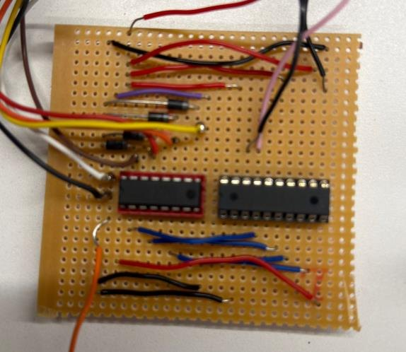
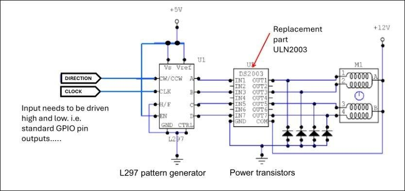
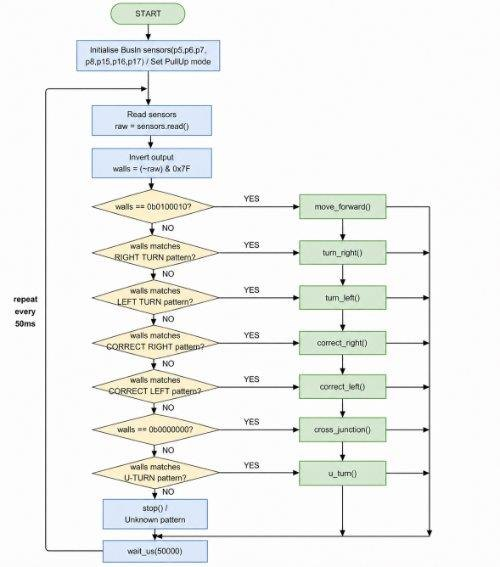
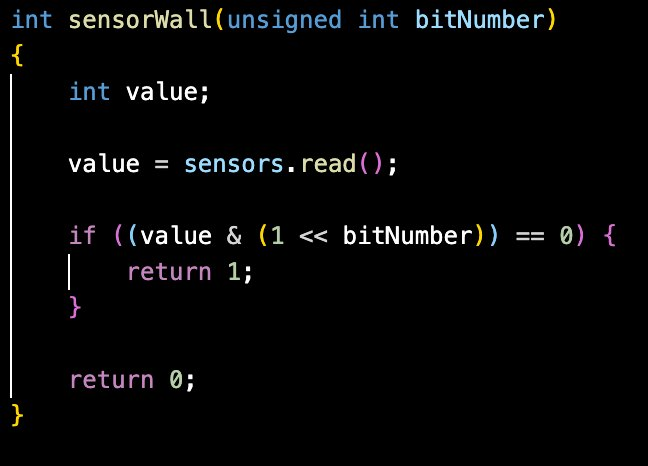
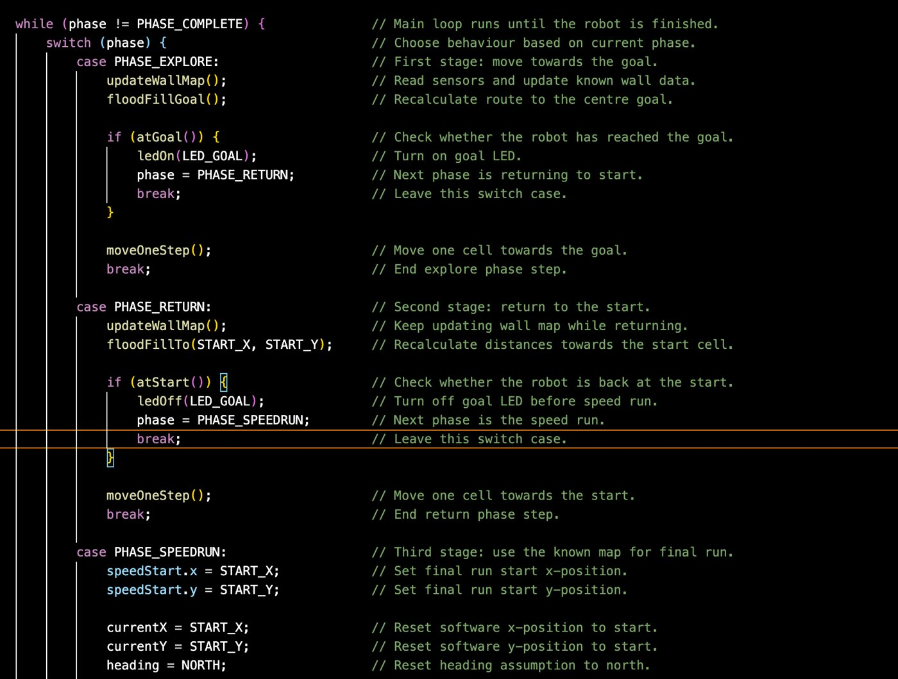
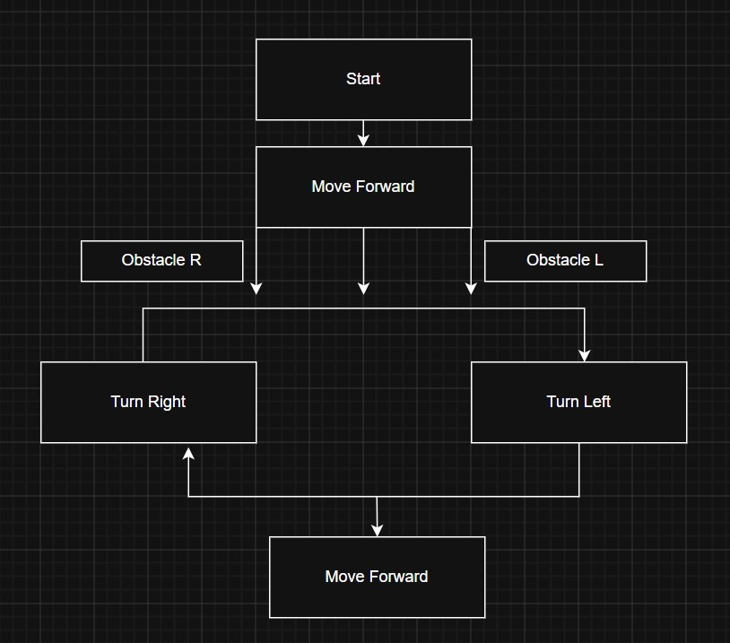
03Data Streaming · Backend SystemsSensorStream: Real-Time Sensor Pipeline
A Python and Kafka pipeline that streams live sensor readings, stores them safely and flags unusual values.
27automated tests passing
SensorStream: Real-Time Sensor Pipeline
A Python and Kafka pipeline that streams live sensor readings, stores them safely and flags unusual values.
Move live sensor readings through a backend system instead of processing everything in one script, and make sure no reading is lost or stored twice along the way.
A Python producer sends simulated thermistor readings, or live data from an MBED or PIC board over serial, into a Kafka topic with three partitions. Separate consumers log, store and monitor the stream. Each reading's position in the stream is saved in SQLite, so a restarted consumer skips anything it has already stored, and messages that can't be processed go to a dead-letter topic with a note of where they came from.
Unusual values are caught with rolling z-scores and hard limits and published to their own anomaly topic. The whole system starts with one Docker Compose command, and 27 automated tests cover the main paths.
04Web Development · HackathonMasonBee
A sustainable home-renovation app for UK first-time buyers, built in a team at the HuddleHive Women in Tech hackathon, hosted by Accurx.
2ndplace at the hackathon
MasonBee
A sustainable home-renovation app for UK first-time buyers, built in a team at the HuddleHive Women in Tech hackathon, hosted by Accurx.
Build a working app in a short, fixed time that helps first-time buyers plan greener home renovations.
I worked on the front end and connected the app to the Gemini API. I also helped the team scope what was realistic, so we got the main user journey working before adding extras.
We delivered a working main journey within the time limit, and our team placed second.
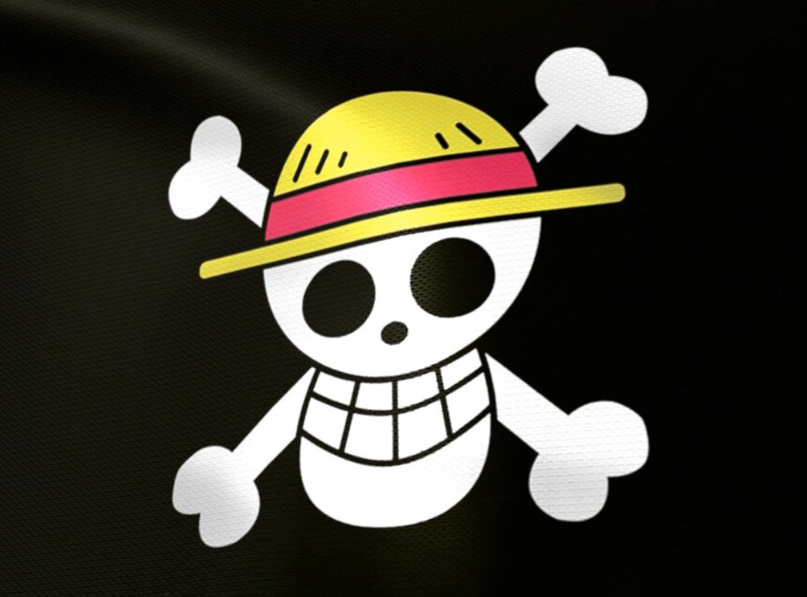
“If you don’t take risks, you can’t create a future.”— Monkey D. Luffy, Clockwork Island Adventure
a little context
About Me
I am a final-year Software Engineering with Electronics student interested in software development, responsible data and connected technology.
My long-term goal is to work in health-tech, where reliable software and thoughtful design can improve patient, staff or clinical experiences.
Alongside my degree, working in university front-of-house has strengthened my communication, organisation and ability to respond calmly to real user needs.
I also volunteer each week as a children’s chess-club coach at my local library, which has strengthened how I explain ideas, encourage confidence and adapt to different learners.
BEngSoftware Engineering with Electronics2027Graduate rolesLondonBased
recognitionLearning beyond
Learning beyond
the timetable.
Femetronics’ six-week AI/ML F1 Flux programme deepened my work in data analysis and ethical bias mitigation. My Work-Based Learning Project also developed practical problem-solving, communication, teamwork and presentation skills through an organisation-led challenge.
currently reading, eventually finishingA Shelf with
A Shelf with
No Single Genre
I read a little bit of everything. These titles give a fairly accurate picture of the range.
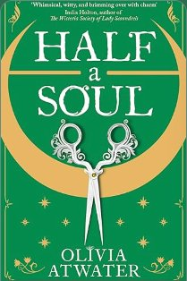
Olivia Atwater
Half a Soul
Whimsical fantasy, sharp manners and a heroine missing half her soul.
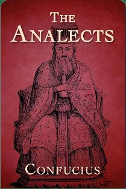
Confucius
The Analects
“When I walk along with two others, they may serve me as my teachers.” A good reminder that there’s something to learn from almost anyone.
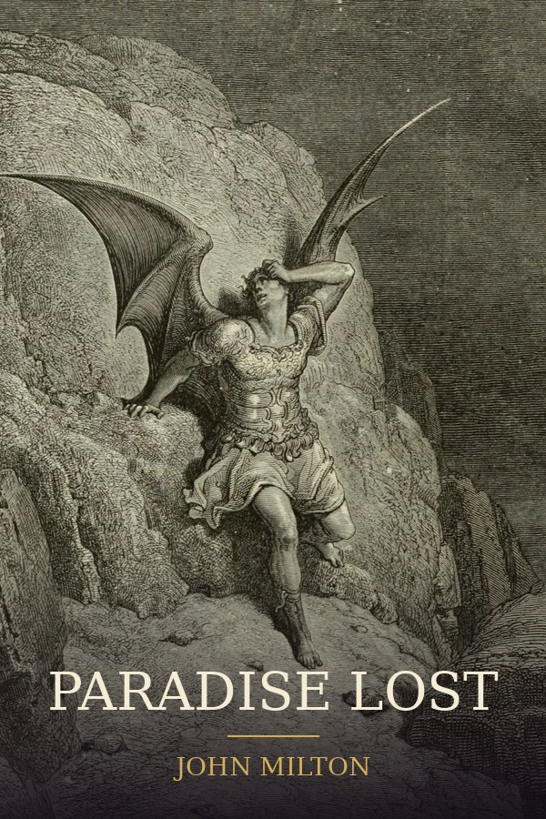
John Milton
Paradise Lost
“Things unattempted yet in prose or rhyme.” A reminder to stay curious, explore unfamiliar ideas and not be afraid to try something new.
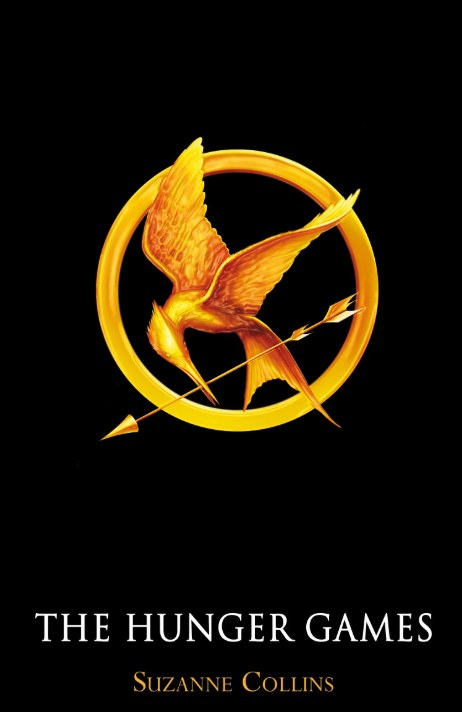
Suzanne Collins
The Hunger Games
A fast, sharp dystopia about survival, power and who controls the story.
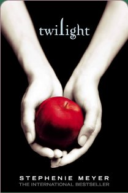
Stephenie Meyer
Twilight
I first read the series over a Christmas holiday and have reread it many times since.
a ten-year favouriteGet in Touch
I am open to 2027 graduate software-engineering opportunities, particularly in health-tech and other human-centred technology sectors.
s.ahmed124@hotmail.com